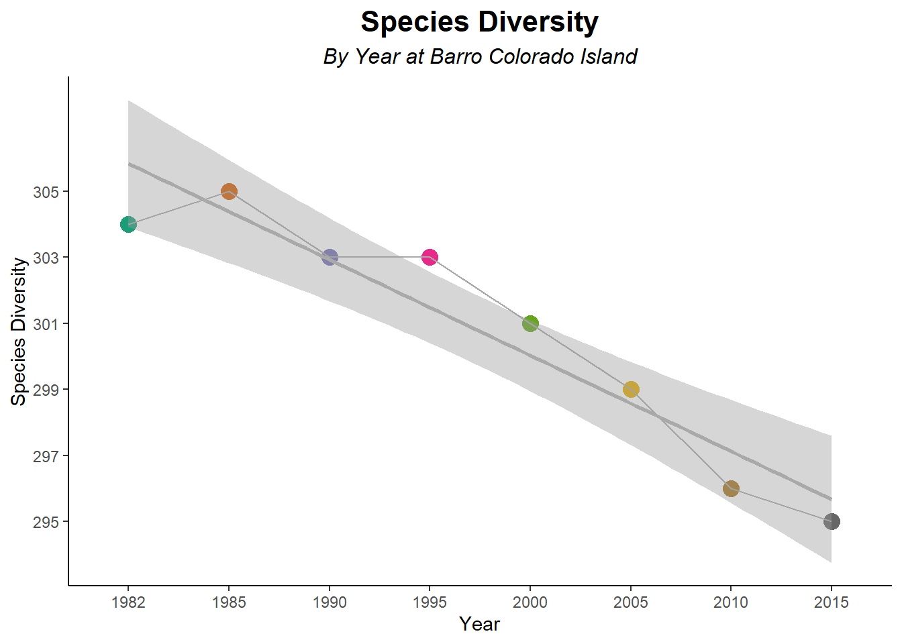

Changes in Species Abundance and Richness at Barro Colorado Island
Mid Semester Project
Abstract
The biodiversity of an ecosystem is a key indicator of its health and resilience. In this study, plants in tropical and subtropical moist broad leaf forests biomes were analyzed for their total abundance across 14 locations, using publicly available data from the BioTIME database. The analysis was then focused on one site, Barro Colorado Island located in Panama, where the abundance and species diversity was compared over time, from 1982 to 2015. Year to year turnover was assesed using Bray-Curtis dissimilarity, and species evenness was assessed using the Shannon Diveristy Index. It was found that BioTIME’s dataset includes sites from seven different countries located in Asia, North America, and South America, with the highest total abundance recorded in Malaysia and Panama. At the Barro Colorado site, both total abundance and species diversity significantly decreased over time, whereas community dissimilarity and Shannon diversity did not significantly change over time. These findings suggest that there are potential environmental or human factors influencing the biodiversity of this study site, through decreased abundance and diversity, but the remaining community has remained stable.
Introduction
Biodiversity refers to the variety of species, such as plant, animals, fungi, and microorganisms, within a given area. How these organisms interact with each other and the environment can heavily influence the health of an ecosystem. A healthy ecosystem supports a wide range of species by providing food, shelter, and clean air and water (Why Is Forest Biodiversity Important?, 2022). Forest across the world are responsible for supporting the majority of wildlife. According to the Food and Agriculture organization of the United Nations, forest support 68% of mammal species, 70% of bird species, and 80% of amphibian species (FAO & UNEP, 2020). In certain ecosystems, such as tropical forest, trees and other woody plants play crucial roles in nutrient cycling, microclimate regulation, and providing habitats for other organisms (Pasion et al., 2018). Therefore, studying the biodiversity of various areas is essential to not only broaden our understanding of ecosystems, but to support and maintain these important habitats.
The Barro Colorado Island plot, located at Gatun Lake on the Panama Canal, was established in 1981 and contains over four hundred thousand trees with over three hundred species. The area has been censused eight times from 1983 to 2022 by the Smithsonian Tropical Research Institute and Princeton University (Aguilar, n.d.), in which all free standing woody plants have been tagged and documented. Additionally, the research team has noted a high turnover in this area, with 40% of the tree species changing by more than 10% in total abundance over the course of just three years, from 1982 to 1985 (Aguilar, n.d.). This plot is known as the, “most-studied tropical forest in the world,” (Saucedo, 2017), and thus, the data collected from this area provides the opportunity to study how biodiversity has changed over the past four decades in this area.
This analysis may provide insight into how biodiversity has shifted due to environmental changes and human influence over a significant period of time. In this study, changes in species richness and total abundance were quantified using Bray-Curtis dissimilarity, Shannon Diversity index, and regression models. Because global temperatures have increased over the past four decades, which can influence species survivability and growth (US EPA, 2022), we hypothesize that species diversity and total abundance have decreased over time.
Methods
Data Collection and Cleaning
All data was acquired from the BioTIME database (Global Database of Biodiversity Time Series, n.d.) and all analysis was performing using R and R Studio (R Core Team, 2025). The raw data, assigned to the variable BioTIME_data, was acquired by using BioTIME’s “Build a Search” function and selecting for “Tropical and subtropical moist broad leaf forests” for biome and “Plants” for taxa. BioTIME’s metadata csv, assigned to the variable BioTIME_metadata, was also downloaded for additional information on study sites.
A summary of each data frame was run to gain information regarding the columns in each file. The BioTIME data contains information regarding the study site (Study ID), abundance, latitude and longitude, year, and name. Biomass and depth columns are available, but are primarily composed of NAs. Biomas, depth, and sample_desc columns were removed to excluded repeated data and NAs. The structure (str) of each file was then analyzed to view data types. All columns in BioTIME_data were numeric except for sample_desc and valid_name, which were characters.
To further investigate information regarding the study IDs, data from BioTIME’s metadata was imported. A list of study IDs from the original dataset was created, named study_ID_list, and BioTIME_metadata was filtered, using the dplyr package (Wickham et al., 2023) from tidyverse (Wickham, 2023) for study IDs in this list and named study_ID_metadata. This data set was then filtered for only the following columns: study_ID, realm, climate, cen_latitude, cen_longitude, habitat, protected_area, area, and organisms. This new data set was named filtered_metadata.
Then, a map was created using the leaflet package (Cheng et al., 2025) to view where the study sites were located using their latitiude and longitude from the filtered_metadata file. Since this interactive map cannot be outputted in a pdf file, a map was also created using ggplot (Wickham et al., 2025) from the tidyverse package. A simple feature (sf) object from the rnaturalearth package (Massicotte & South, 2025) and sf package (Pebesma, 2025) was imported, called world. The study sites were then added to a separate sf file, called sites_sf. Ggplot was then used to graph both sf objects, using geom_sf.
This map displays that the study sites are primarily located in South America and Asia. To compare across regions, country and continent columns were added to the filtered_metadata file. To do this, the simple feature (sf) frame, called world, was imported again from rnaturalearth. This sf object has coordinates associated with countries and continents. The latitude and longitude data points from the filtered_metadata file were converted to an sf object, and then these points were found in the world object and the country and continent information was assigned to another sf object named points_with_country. The geometry of the object was dropped, converting it back to a data frame, and these two columns were joined, using a left_join from dplyr, to filtered_metadata in a new data frame called filtered_metadata_with_country.
The two data files were then combined using left_join by study_id, and excluding the repeated latitude and longitude columns.
The data frame, defined as combined_BioTIME_data, contains 32385 observations of 14 variables, which was viewed using the head function. study_ID was also converted to a factor and clean_names from the janitor package (Firke, 2024) was used to convert all column names to lowercase for simplicity.
Data Analysis
Total Abundance by Country and Study Site
Abundance was compared by location to gain a general understanding of the dataset. The data was grouped, using the dply function group_by, by country and continent, and data points without a country were excluded. A sum of the abundance was then calculated using the summarize function. This data was then graphed using the ggplot2 package , with country on the x axis, abundance on the y axis, fill by continent, and geom_col() to create a bar graph, seen as Figure 1. Graph title, subtitle, and axis titles were added using the labs function to all graphs, and themes was used to center and bold titles. Theme_classic was also used for all graphs from ggplot2.
Abundance was then compared between the study sites using the same methods, but grouping by study_id and plotting it on the x axis, seen in Figure 2.
Since there were 14 study sites in this data set, only study site 60 was further analyzed for its diversity. This site, from Panama, has a Tropical forest habitat, with tropical woody plants. Data was collected from 1982 to 2022. This data was analyzed for total abundance (Figure 3), species diversity (Figure 4), year to year species turnover (Figure 5), and Shannon diversity (Figure 6).
To calculate total abundance by year for site 60, combined_BioTIME_data was filtered for when study_id was 60, grouped_by year, and the total abundance was summarized. This data was then assigned to the variable abundance_ID60. Year was then converted to a factor using the mutate function, from dplyr. Additionally, the minimum and maximum abundance values were assigned to variables ab_div_min and ab_div_max, and the year associated with this value was then saved under variables ab_year_min and ab_year_max so that they can be referenced as in line code. A linear regression was also run with abundance as the dependent variable, year as the independent variable, and using the data set abundance_ID60. A summary of the linear model was then assigned to the variable abundance_60_lm.
The data was then graphed using ggplot with year on the x axis, abundance on the y axis, and color associated with year, seen in Figure 3. Geom_point, geom_line, and geom_smooth (with lm method) were used to add data points, connecting lines, and a linear regression. The color palette Dark_2 from scale_color_brewer was used for all of the following graphs. Species diversity, Figure 4, was plotted in the same way, but by summarizing the number of distinct species in the column valid_name, instead of abundance.
Species turnover was calculated using a Bray-Curtis index. combined_BioTIME_data was first filtered for study site 60. Then year, abundance, and valid_name were selected, and the data frame was named ID60_data. These columns were then pivoted, using pivot_wider from the tidyr package, with names from valid_name and values from abundance. This created one column for year, and then a column for each species. Another data frame was then created by removing the year column and running a vegdist (method = bray), from the vegan package (Oksanen et al., 2025). This data frame was then converted to a matrix, named year_turnover, and the yearly turnover was calculated by first removing the first row and last column to shift the matrix and using diag() to compare turnover for consecutive years. These values were then added to a new data frame, named turnover_data. Years were extracted from ID60_data, and “from years” (year1) were found by removing the last year from the data frame, while the “to years” (year2) were found by removing the first year from the data frame. Turnover values from year_turnover were then added as a column to the data frame. An additional column was then added that multiplied the turnover values by 100 and rounded to two decimal places to add a percent turnover column. A linear regression was calculated and a summary was assigned to the variable turnover_lm. Species turnover was graphed the same way as the previous two graphs, using ggplot, with year2 as the x axis, turnover percent on the y axis, and color by year2, however, a “LOESS” model was used instead of a linear regression (“lm”).
To calculate Shannon Diversity, ID60_data was analyzed row by row using rowwise(). The abundance values by row were collected, using c_across, excluding the year column, and the diversity “shannon” index from the vegan package was used to add a new column named shannon to the new data frame, shannon_data. A linear regression was calculated for the entire data set, and for years before (and including) 1995, and post 1995, by filtering the shannon_data. This data was graphed in the same way as the previous graph, with year on the x axis (as a factor), Shannon values on the y axis, and color by year.
Results


Discussion
BioTIME’s database contains ample information on species in various habitats across the world. This study focused on plants in tropical and subtropical moist broad leaf forests, and was then narrowed down to one study site, The Barro Colorado Island (Study Site #60). The surveyed forests, from 14 study sites, were distributed across Asia, North America, and South America, across 7 different countries, seen in Figure 1. Malaysia and Panama had the greatest total abundance across all species and years, at 1,275,598 and 1,764,679 organisms, respectively. Total abundance was then graphed by study site, seen in Figure 2, in which study site 60 had the greatest abundance, and was the only study in Panama.
Study site 60 was then further analyzed to investigate the total abundance and diversity over time, from 1982 to 2015. Total abundance was graphed by year, seen in Figure 3, and displayed a overall decrease in total abundance over time (p = 0.0017, R2 = 0.828) when using a linear regression. This shift was first observed in 1990, with a significant decrease in total abundance from 241,190 organisms in 1990 to 210,899 in 2000. Species diversity, seen in Figure 4, also showed an overall trend of decreased number of distinct species (p = 0.000114, R2 = 0.929) when using a linear regression. The number of species decreased from 304 in 1998 to 295 in 2015.
Changes in the number of distinct species was then further analyzed using Bray-Curtis Dissimilarity. This index is used to quantify the differences in species populations across different communities, such as different sites or time points (Bray Curtis Dissimilarity, 2018). This can be represented as year to year turnover, by calculating the change in species populations between years. The index utilized 0 when the communities are identical, and 1 when the communities have none of the same species. This number was calculated between each year and then represented, in Figure 5, as a percentage. A LOESS regression was used to visualize trends in the percent dissimilarity. A linear regression was also used, which displays no significant change in dissimilarity from 1985 to 2025 (p = 0.891, R2 = 0.004). The similarity of species between years was also very high, with only an average of 3.5% difference in species population across all years. The Shannon Equability Index was then used to analyze how similar the abundance of each species is in the community (Bobbitt, 2021). Similar to the Bray-Curtis index, there was no overall significant trend when using a linear regression (p = 0.263, R2 = 0.202), however, a LOESS regression displayed a general decrease in diversity from 1982 to 1995 and an increase after 1995. An additional linear regression was run for years up to and including 1995, and another regression for years after 1995. It was found that there was no significant trend before 1995, (p = 0.0878, R2 = 0.832), but there was a significant increase after 1995 (p = 0.0123, R2 = 0.975). This shift suggests that something occurred between 1995 and 2000 which supported the evenness of abundance of species. The Shannon index was the highest in 2015, at 4.04, which displays that Barro Colorado Island has a very diverse ecosystem of plants.
Both total abundance and species diversity have decreased from 1982 to 2015 at the Barro Colorado Study Site, supporting the hypothesis. Bray-Curtis and Shannon Diversity suggests that the similarity of species has remained consistent, and the evenness of abundance has increased, suggesting that the ecosystem has become more homogeneous with time. While these results support the hypothesis, there is no direct correlation in this study that suggests that the cause of this decrease is the result of rising global temperatures. Additional temperature data from Barro Colorado Island across this time span is needed to detect any potential correlations. Access to resources, such as nutrient and water, could have been impacted by other environmental factors or natural disasters. This study site also hosts day tours, which include boat tours and rain forest hikes. While likely minimal, the impact of tourism on the site could also be studied.
Conclusion
At the Barro Colorado Study Site in the Panama Canal, total abundance and species diversity have significantly decreased from 1982 to 2015, while species turnover and Shannon Diversity have not significantly changed. The decreases in species and abundance does align with other studies, such as reports from the Environmental Protection Agency (US EPA, 2022), and could be the result of rising global temperatures. Continuing this analysis on the other 13 study sites would provide more insight as to if these same trends are observed in other parts of the world. Ultimately, determining the cause of this decrease in biodiversity is essential for us to learn how to protect the Barro Colorado forests and other ecosystems across the globe.
References
Aguilar, S. (n.d.). Barro colorado island. https://forestgeo.si.edu/sites/neotropics/barro-colorado-island
Bobbitt, Z. (2021). Shannon diversity index: Definition & example. https://www.statology.org/shannon-diversity-index/
Bray curtis dissimilarity. (2018). https://www.statisticshowto.com/bray-curtis-dissimilarity/
Cheng, J., Schloerke, B., Karambelkar, B., Xie, Y. & Aden-Buie, G. (2025). Leaflet: Create interactive web maps with the JavaScript leaflet library. https://rstudio.github.io/leaflet/
FAO & UNEP. (2020). The state of the world’s forests 2020. Forests, biodiversity and people. FAO; UNEP. https://doi.org/10.4060/ca8642en
Firke, S. (2024). Janitor: Simple tools for examining and cleaning dirty data. https://github.com/sfirke/janitor
Global database of biodiversity time series. (n.d.). https://biotime.st-andrews.ac.uk/download.php
Massicotte, P. & South, A. (2025). Rnaturalearth: World map data from natural earth. https://docs.ropensci.org/rnaturalearth/
Oksanen, J., Simpson, G. L., Blanchet, F. G., Kindt, R., Legendre, P., Minchin, P. R., O’Hara, R. B., Solymos, P., Stevens, M. H. H., Szoecs, E., Wagner, H., Barbour, M., Bedward, M., Bolker, B., Borcard, D., Borman, T., Carvalho, G., Chirico, M., De Caceres, M., … Weedon, J. (2025). Vegan: Community ecology package. https://vegandevs.github.io/vegan/
Pasion, B. O., Roeder, M., Liu, J., Yasuda, M., Corlett, R. T., Slik, J. W. F. & Tomlinson, K. W. (2018). Trees represent community composition of other plant life-forms, but not their diversity, abundance or responses to fragmentation. Scientific Reports, 8(1), 11374. https://doi.org/10.1038/s41598-018-29635-9
Pebesma, E. (2025). Sf: Simple features for r. https://r-spatial.github.io/sf/
R Core Team. (2025). R: A language and environment for statistical computing. R Foundation for Statistical Computing. https://www.R-project.org/
Saucedo, J. (2017). Barro Colorado Island. https://stri.si.edu/visit/barro-colorado
US EPA, O. (2022). Climate Change Impacts on Forests. https://www.epa.gov/climateimpacts/climate-change-impacts-forests
Why is forest biodiversity important? (2022). https://www.rayonier.com/stories/why-is-forest-biodiversity-important/
Wickham, H. (2023). Tidyverse: Easily install and load the tidyverse. https://tidyverse.tidyverse.org
Wickham, H., Chang, W., Henry, L., Pedersen, T. L., Takahashi, K., Wilke, C., Woo, K., Yutani, H., Dunnington, D. & van den Brand, T. (2025). ggplot2: Create elegant data visualisations using the grammar of graphics. https://ggplot2.tidyverse.org
Wickham, H., François, R., Henry, L., Müller, K. & Vaughan, D. (2023). Dplyr: A grammar of data manipulation. https://dplyr.tidyverse.org